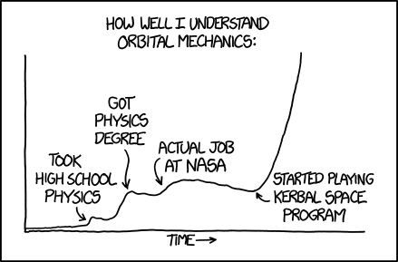
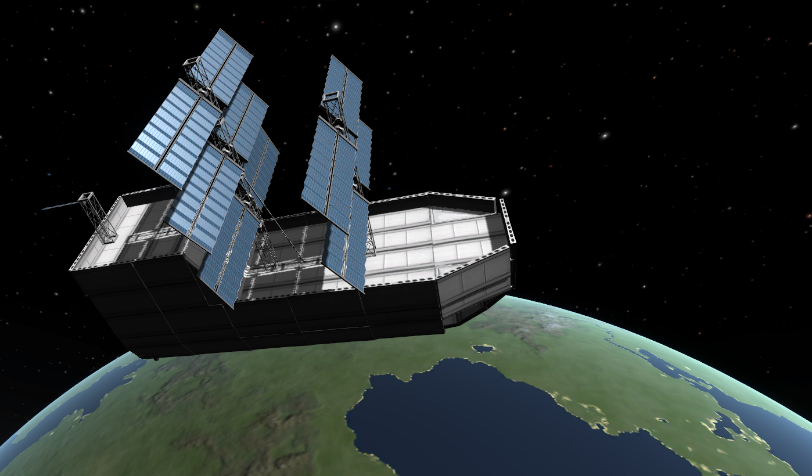

What Makes Me Love Kerbal Space Program?
Kerbal Space Program allows players to experience scenarios outside of daily life that are still feasible. The realistic physics engine and mechanics also draws to me especially because physics is one of my favourite subjects and the game allows players to use the laws of physics to their advantage to complete their goals. More advanced players even go as far as calculating these values that you normally wouldn't do until university because Kerbal Space Program allows people to have these experiences. 
It's Only Rocket Science
The game is also an excellent way to learn about rocket science while still having fun! Its even rumored that NASA uses ksp to train its scientists... *explosion in distance* 
Infinite possibilities
Since the game is a sandbox style simulation with a whole solar system to explore it also allows for many hours of binge gaming to be spent on it (mine currently being 500hours). Some people go as far as creating 2 ton spaceships that can make it to europa or planes that can launch into orbit without the use of staging.
A Delta-V table
Delta-V is a rocket science term used to measure the amount of energy/work/speed a vessel can exert which is an indicator of how far a vessel can travel. This table is a simple demonstration of how much Delta-V is required to get to a certain body's orbit and land. The table however does not take into account aerodynamic affects such as aerobraking which can greatly influence delta-v requirements for certain bodies. The table also doesn't factor in the possinly of gravity assists which can be perform to yet again greatly reduce delta-v requirements.
| Kerbin To | To Low Orbit | Landing from orbit (no aerodynamics) |
|---|---|---|
| Kerbin | 3400m/s | 3400m/s |
| Mun | 4540m/s | 580m/s |
| Minmus | 4480m/s | 180m/s |
| Duna | 5070m/s | 1450m/s |
| Ike | 4890m/s | 390m/s |
| Eve | 5800m/s | 8000m/s |
| Gilly | 4970m/s | 30m/s |
| Moho | 7490m/s | 870m/s |
| Dres | 6240m/s | 430m/s |
| Jool | 8250m/s | Not Possible |
| Eeloo | 6840m/s | 620m/s |